Lessenverdeling
in Personeel
Inleiding
Bij het verdelen van de lessen geeft u per lesgroep aan welke docent de les zal geven. U heeft de mogelijkheid meerdere docenten per lesgroep te plannen en deze te verdelen over de lessen, of over verschillende weken.
 Personeel > Lessenverdeling
Personeel > Lessenverdeling
Eén docent op een les zetten
U zet een docent als volgt op een les:
- Open het scherm Personeel > Lessenverdeling
- Klik in een cel om een docent op een les te plaatsen
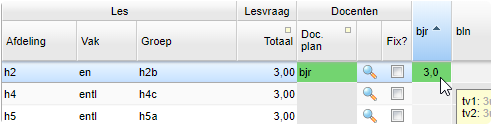
De docent is nu op alle geplande lessen van de groep geplaatst. U ziet ook het netto aantal lesuren terug in de cel.
Lessenverdeling fixeren
U kunt de lessenverdeling per groep fixeren, zodat u deze niet per ongeluk kunt wijzigen.
- Zet een vinkje in de kolom 'Fix?'
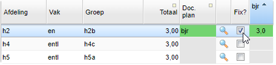
Meerdere docenten op een les zetten
U kunt ook twee of meer docenten op een les zetten:
- Klik de eerste docent op de les
- Zet met CTRL+klik de andere docent(en) op de les.
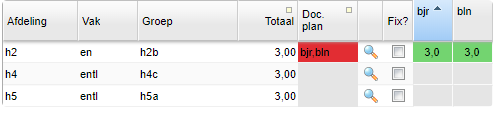
Note
Wanneer u vakkeuzelessen heeft aangemaakt, ziet u deze hier ook terug. Ook op deze lessen kunt u docenten plaatsen.
Docenten verdelen over lessen
Als u meerdere docenten op een lesgroep heeft gezet, kunt u in het scherm van de lessenverdeling (details) de docenten verdelen. Dit doet u als niet alle docenten alle lessen gedurende het hele schooljaar geven.
Om snel naar de geselecteerde les te gaan in het detailscherm, kunt u op het vergrootglas klikken dat achter de betreffende les staat.
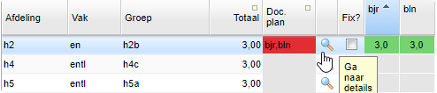
In dit scherm ziet u vervolgens een aparte regel voor elke docent die aan de les hangt. In bovenstaand voorbeeld een regel voor docent bjr en een regel voor docent bln. U kunt nu deze regels bewerken om de gewenste situatie te verkrijgen.
Scenario 1: Een groep krijgt 3 lesuren in de week. Twee lesuren worden gegeven door docent bjr en één lesuur wordt gegeven door docent bln:
- Open het scherm Personeel > Lessenverdeling (details)
- Zet voor de lessentabel bij bjr een vinkje
- Geef aan dat deze docent 2 lessen gaat verzorgen.
- Zet voor de lessentabel bij bln een vinkje
- Geef aan dat deze docent 1 les gaat verzorgen
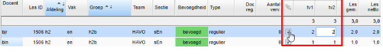
Scenario 2: Een groep krijgt 3 lesuren in de week. Alle lesuren worden in tijdvak 1 gegeven door docent 'xxx'. In tijdvak 2 worden de lessen gegeven door docent 'zzz':
- Open het scherm Personeel > Lessenverdeling (details)
- Zet voor de lessentabel een vinkje
- Geef aan dat docent 'xxx' 3 lessen in tv1 verzorgt, en docent 'zzz' 3 lessen in tv2
Scenario 3: Een groep krijgt 3 lesuren in de week. Alle lesuren worden tot en met week 42 gegeven door docent 'xxx'. Vanaf week 43 worden de lessen gegeven door docent 'zzz':
- Open het scherm Lessenverdeling (details)
- Dubbelklik bij de docent 'xxx' in de kolom 'T/m week' en vul hier 42 in.
- Dubbelklik bij de docent 'zzz' in de kolom 'Vanaf week' en vul hier 43 in.
Note
De kolom 'Totaal' laat de totale lesvraag per lesgroep zien. Als u meerdere tijdvakken heeft, dan is de lesvraag per tijdvak te zien.
Bij Personeel > Lessenverdeling kunt u het totaal aantal uur per tijdvak dat een docent les geeft zien door met de cursor op de afkorting van de docent te gaan staan:
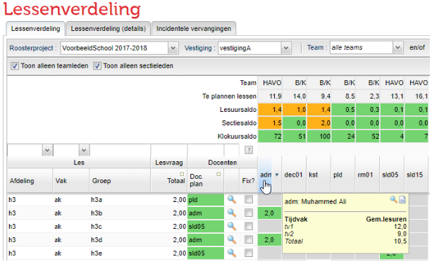
Warning
Inzet op andere vestigingen
Technisch is het mogelijk om een docent te koppelen aan een lesgroep die hoort bij een andere vestiging. U krijgt in Lessenverdeling (details) direct een melding dat er een docent gekoppeld is aan een vestiging waar hij/zij niet aan gekoppeld is. U kunt dit kan herstellen. De lesgroep is te herkennen aan de oranje regel.
Lesuur-, Klokuur- en Sectiesaldo
In het scherm van de lessenverdeling is het ook mogelijk om verschillende saldo's terug te zien:
- Het lesuursaldo: deze cel toont informatie over de totale inzet lessen en het resterende lessaldo. In onderstaand voorbeeld moet docent bjr 15,5 lessen geven, volgens de formatieplanning. Hij is nu voor 5,0 lessen ingezet, dus er blijft nog 10,5 uur over om te verdelen.
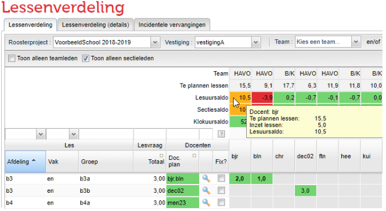
- Het sectiesaldo: deze cel bevat informatie over het aantal te plannen lessen in een sectie, de huidige inzet in de sectie en het resterende sectiesaldo. In onderstaand voorbeeld is bij de sectieverdeling ingevuld dat docent bjr 15 1e graads lessen moet gaan geven in sectie Engels. Hij is momenteel voor 1 uur 1e graads lessen ingezet, dus er blijft nog 14 uur over. Er is geen 2e graads sectie saldo ingevuld. In het totaal worden de 2e graads lessen afgetrokken van het sectiesaldo, dit resulteert in een saldo van 10,0.
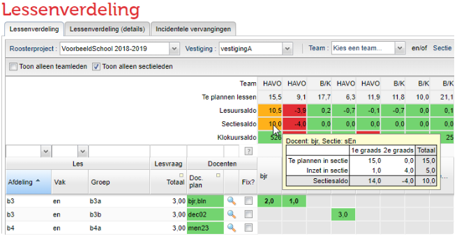
- Klokuursaldo: deze cel bevat informatie over het aantal klokuur dat een docent beschikbaar is voor lessen en taken, de actuele lesinzet en de actuele inzet taken. In onderstaand voorbeeld is bjr 901 uur beschikbaar voor lessen en taken. Momenteel is hij voor 250 klokuur ingezet voor lessen en 125 klokuur voor taken. 901-250-125= 526. Er blijft nu nog 526 klokuur over voor lessen en/of taken.
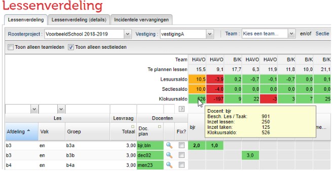
Geplande groepen/roostergroepen
In het scherm van de lessenverdeling kunt u in de kolom Groep zien welke roostergroepen er bij een geplande groep horen, mits u de roostergroepen hebt geactiveerd in de desktop (in het Groepen en Lessenscherm):
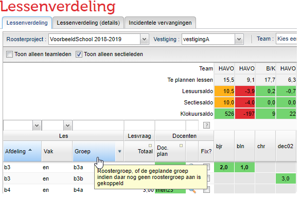
Als de roostergroepen nog niet door de roostermaker vanuit de desktop geactiveerd zijn, dan ziet u de naam van de geplande groep terug in het scherm van de lessenverdeling:
Vervangen van lessen
Een docent die voor een langere periode afwezig is, zal moeten worden vervangen. Dit kan door een docent die nog ruimte heeft in zijn jaartaak, maar er kan ook een uitbreiding ter vervanging worden aangemaakt. In deze paragraaf laten wij u zien, hoe u dit in het portal regelt.
> Personeel > Lessenverdeling > Lessenverdeling (details)
Vervanging inzetten
Bij Personeel > Lessenverdeling (details) kunt u een docent inzetten als vervanger.
- Selecteer een regel met lessen die u wilt vervangen
- Klik op de knop
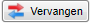
- Selecteer bij Code de vervangende docent. Dit is een verplicht veld
- Geef de start- en eindweek aan
- Selecteer de gewenste klokuurberekening
- Vul, indien nodig, een opmerking in, doe dit ook bij de reguliere docent
- Klik op de knop
Ingevulde opmerkingen voor de roostermaker, of voor de formatiebeheerder, kunt u nu via een tooltip terugvinden in het scherm van de lessenverdeling:
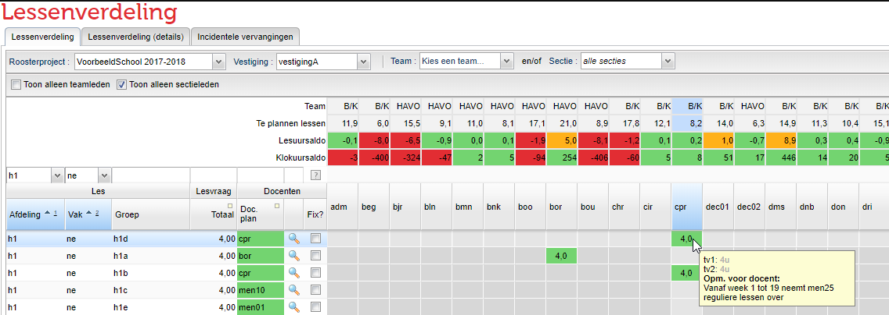
Note
Bulkoptie Als meerdere lessen of taken van één docent door dezelfde vervanger worden overgenomen kunt u dat ook in bulk invoeren door simpelweg meerdere regels van de te vervangen docent te selecteren!
Bulkmutaties doorvoeren Wilt u bij meerdere taaktoekenningen mutaties doorvoeren? Het is mogelijk om in bulk wijzigingen in één keer door te voeren.
- Ga in het Portal naar: Personeel > Lessenverdeling > Lessenverdeling (details)
- Selecteer de lessen waar u ineens dezelfde wijziging op wilt toepassen. Gebruik hier eventueel de filtermogelijkheden voor.
- Bovenaan het scherm ziet u de knop
. U kunt nu bijvoorbeeld voor de geselecteerde regels de start- en/of einddatum instellen. In onderstaande afbeelding ziet u welke opties er zijn.
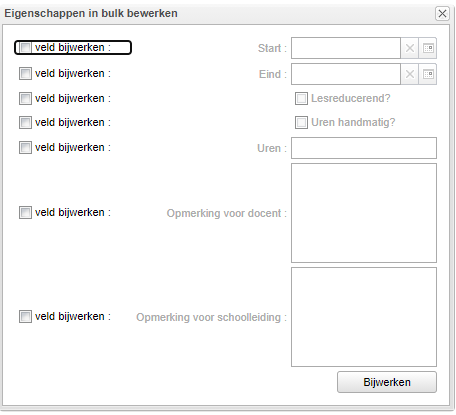
- Door op de knop
te klikken, wordt de mutatie doorgevoerd.
Met de optie
- Selecteer de les(sen) van de docent die afwezig is en klik op de knop
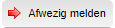
- Geef de start- en eindweek aan van de afwezigheid aan.
- Selecteer de gewenste klokuurberekening'.
- Vul, indien nodig, een opmerking in
- Klik op de knop
- Ook van een afwezige les wordt de omvang uitgerekend. Dit ziet u ook terug op de formatiekaart in het overzicht van de docent. In onderstaand voorbeeld worden de lessen van h1d voor 2u per week vervangen door men25. De andere uren, ook 2u per week worden niet vervangen.
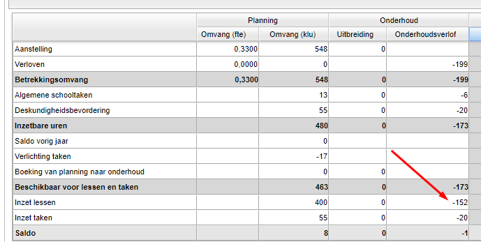
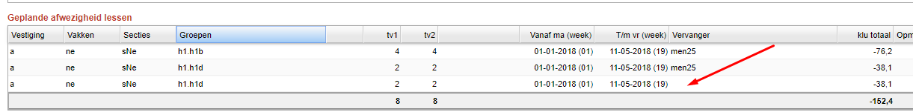